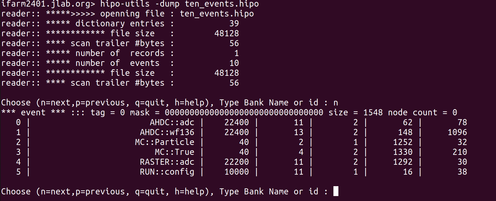

Creation of the AHDC::wf136 bank?
I wanted to create a new bank to save the digitized AHDC signal. I called it AHDC::wf136. wf refers "waveform" and 136 is the sampling number. (It is important to note that 136 is an abitrary number that should normally depends on (int) (tmax-tmin)/44ns. Here, the time windows is 6000 ns.)
The goal is to provide this digitized signal to the decoder in the reconstruction algorithm.
Step 1 (classic)
In gemc/source/hitprocess/clas12/alert/ahdc_hitprocess.cc, I added :
for (int itr=1;itr<=136;itr++){
std::ostringstream sEntry;
sEntry << "wf136_s" << itr;
dgtz[sEntry.str()] = (int) SDgtz.at(itr-1);
}
Step 2 (classic)
In gemc/detectors/clas12/alert/ahdc/bank.pl, I added these lines :
for my $itr (1..136) {
my $entry = "wf136_s$itr";
insert_bank_variable(\%configuration, $bankname, $entry,$itr+3, "Di", "Digitized AHDC siganl : sample n° $itr");
}
To update the database, in gemc/detectors/clas12/alert/ahdc, I run :
./ahdc.pl config.dat
Step 3 (less classic)
In gemc/source/output/hipoSchema.h, I declared :
class HipoSchema {
// ...
// detectors
hipo::schema alertAhdcWF136chema;
// ..
};
In gemc/source/output/hipoSchema.cc, I added :
// detectors
alertAhdcWF136chema = hipo::schema("AHDC::wf136",22400, 13); // <== this line !
// ...
// detectors
std::ostringstream ListOfAhdcWF136;
ListOfAhdcWF136 << "sector/B, layer/B, component/S";
for (int itr=1;itr<=136;itr++){
ListOfAhdcWF136 << ", s" << itr << "/I";
}
alertAhdcWF136chema.parse(ListOfAhdcWF136.str()); // <== this line !
// ...
schemasToLoad["AHDC::wf136"] = alertAhdcWF136chema; // <== this line !
// ...
Step 4 (very subtle)
The writting of the digitized bank is done in hipo_output::writeDgtIntegrated(...).
hitType is the name of the detector. For ALERT, hitType == "ahdc".
The line bellow extract the structure of the AHDC bank.
gBank dgtBank = getDgtBankFromMap(hitType, banksMap);
If you do a cout << dgtBank, you will got something like that :
======> Show dgtBank
>> Bank ahdc loaded with id 2 : ahdc bank ID
> Variable : sector id: 1 type: Di Description: set to 1
> Variable : layer id: 2 type: Di Description: hipo layer is superlayer*10 + layer
> Variable : component id: 3 type: Di Description: wire number
> Variable : ADC_order id: 4 type: Di Description: set to 1
> Variable : ADC_ADC id: 5 type: Di Description: ADC integral from pulse fit
> Variable : ADC_time id: 6 type: Dd Description: adc time from pulse fit
> Variable : ADC_ped id: 7 type: Di Description: pedestal from pulse analysis - currently set to noise level
> Variable : ADC_integral id: 8 type: Di Description: integral
> Variable : ADC_timestamp id: 9 type: Dd Description: currently set to t_start
> Variable : ADC_t_cfd id: 10 type: Dd Description: time from constant fraction discriminator
> Variable : ADC_mctime id: 11 type: Dd Description: mc time - weighted average with Edep
> Variable : ADC_nsteps id: 12 type: Di Description: nsteps
> Variable : ADC_mcEtot id: 13 type: Dd Description: mcEtot
> Variable : hitn id: 99 type: Di Description: hit number
> Variable : wf136_s1 id: 4 type: Di Description: Digitized AHDC siganl : sample n° 1
> Variable : wf136_s2 id: 5 type: Di Description: Digitized AHDC siganl : sample n° 2
> Variable : wf136_s3 id: 6 type: Di Description: Digitized AHDC siganl : sample n° 3
> Variable : wf136_s4 id: 7 type: Di Description: Digitized AHDC siganl : sample n° 4
> Variable : wf136_s5 id: 8 type: Di Description: Digitized AHDC siganl : sample n° 5
> Variable : wf136_s6 id: 9 type: Di Description: Digitized AHDC siganl : sample n° 6
> Variable : wf136_s7 id: 10 type: Di Description: Digitized AHDC siganl : sample n° 7
> Variable : wf136_s8 id: 11 type: Di Description: Digitized AHDC siganl : sample n° 8
> Variable : wf136_s9 id: 12 type: Di Description: Digitized AHDC siganl : sample n° 9
> Variable : wf136_s10 id: 13 type: Di Description: Digitized AHDC siganl : sample n° 10
> Variable : wf136_s11 id: 14 type: Di Description: Digitized AHDC siganl : sample n° 11
> Variable : wf136_s12 id: 15 type: Di Description: Digitized AHDC siganl : sample n° 12
> Variable : wf136_s13 id: 16 type: Di Description: Digitized AHDC siganl : sample n° 13
> Variable : wf136_s14 id: 17 type: Di Description: Digitized AHDC siganl : sample n° 14
> Variable : wf136_s15 id: 18 type: Di Description: Digitized AHDC siganl : sample n° 15
> Variable : wf136_s16 id: 19 type: Di Description: Digitized AHDC siganl : sample n° 16
> Variable : wf136_s17 id: 20 type: Di Description: Digitized AHDC siganl : sample n° 17
// etc...
At this step, I was confident with the fact that I could access my new bank. To continue, I just got inspire by the code already written. As AHDC::wf136 is neither of type adc nor tdc, I had to do some stuffs manually. So I extracted the schema and the bank like that :
// Specific to AHDC and AHDC::wf136
hipo::schema ahdcWF136Schema = (output->hipoSchema)->schemasToLoad["AHDC::wf136"];
hipo::bank ahdcWF136Bank(ahdcWF136Schema, HO.size());
//std::cout << "======> Show ahdcWF136Bank" << std::endl;
//ahdcWF136Bank.show(); // to have a preview the AHDC::wf136 // of course, at this step, all entries are set to 0
It remained to fill the bank when hitType == "ahdc" :
for(auto &bankName : dgtBank.orderedNames ) {
// ...
if(hasADCBank) {
// looping over the hits
for(unsigned int nh=0; nh<HO.size(); nh++) {
map<string, double> theseDgts = HO[nh].getDgtz();
for(auto &thisVar: theseDgts) {
// found data match to bank definition
if(thisVar.first == bname) {
string varType = dgtBank.getVarType(thisVar.first);
// sector, layer, component are common in adc/tdc so their names are w/o prefix
// sector, layers are "Bytes"
if(bname == "sector" || bname == "layer") {
detectorADCBank.putByte(bname.c_str(), nh, thisVar.second);
if (hitType == "ahdc") {ahdcWF136Bank.putByte(bname.c_str(), nh, thisVar.second);} // <== This line !
} else if(bname == "component") {
detectorADCBank.putShort(bname.c_str(), nh, thisVar.second);
if (hitType == "ahdc") {ahdcWF136Bank.putShort(bname.c_str(), nh, thisVar.second);} // <== This line !
} else {
// all other ADC vars must begin with "ADC_"
if(bname.find("ADC_") == 0) {
string adcName = bname.substr(4);
if(varType == "i") {
detectorADCBank.putInt(adcName.c_str(), nh, thisVar.second);
} else if(varType == "d") {
detectorADCBank.putFloat(adcName.c_str(), nh, thisVar.second);
}
} else if(bname.find("wf136_") == 0) { // actually this prefix only appears in AHDC
if (hitType == "ahdc") {
string wf136Name = bname.substr(6);
if (varType == "i"){
ahdcWF136Bank.putInt(wf136Name.c_str(), nh, thisVar.second); // <== This line !
}
}
}
}
// ...
}
Result
